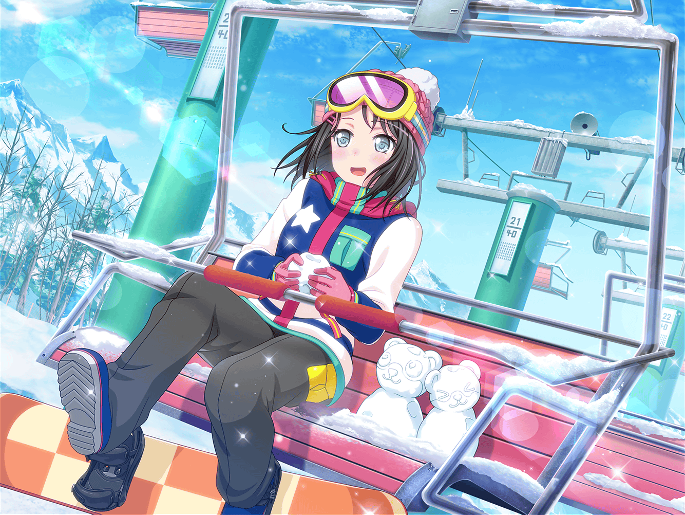
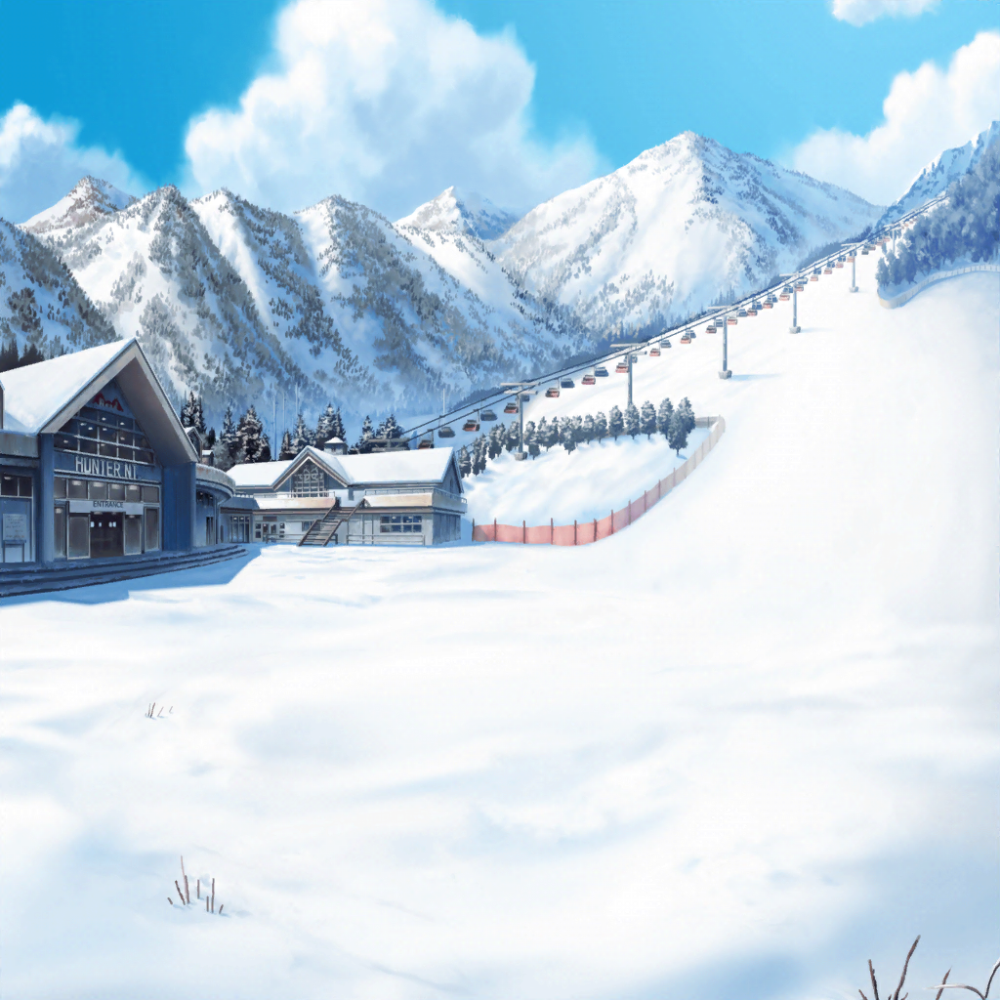

ゲレンデ 雪遊び広場
ミッシェル
いやーしかし、スノボに来てまで
これを着ることになるとは思わなかった
あこ
ていうか、その着ぐるみを着て
自由に動き回れるのすごいね！
麻弥
言われてみると、すごいですね
ミッシェル
もう結構やってますからね……
あ、でもこの新しいヤツはちょっと今までのと違うかも
あこ
え、そうなの？
ミッシェル
うん、ちょっと重たいっていうか……
足があげづらくって……あ、わ、わ！
あこ
大丈夫！？
ミッシェル
あーうん、全然大丈夫。
まだ慣れてないだけだから。
あ、でも、ちょっと起きるの手伝ってもらっていい？
あこ
うん！
麻弥
ジブンも手伝いますよー！
一同
せーの！
ミッシェル
うう……助かった。二人ともありがとう
あこ
全然オッケーだよ！ っていうかミッシェルって、
もふもふで気持ちいいんだね！ さすがクマ！
ミッシェル
本当のクマだったら大変なことになってるけどね
麻弥
ちょっと気になったんですが、
ミッシェルさんの中は寒くないんですか？
ミッシェル
それが、めちゃくちゃ暖かいんですよね、この中
あこ
そうなの！？
ミッシェル
なんか暖房がついてるみたい。だから重いのかもしれないけど
麻弥
キグルミの中に……暖房！？
あこ
それって……その中はコタツってこと！？
ミッシェル
そこまでじゃないけど……っていうか
中がコタツだったら汗だくであたし倒れちゃうから
あこ
あ、そっか……
麻弥
でも、それくらい暖かいってことですよね
ミッシェル
まあ、そうですね……たぶん、着ぐるみの中の温度は
うまく調整されているんだと思います。
なんというか、快適です
麻弥
すごいですね……
さっき転んでいましたが、濡れたりもしないんでしょうか
ミッシェル
たぶん外側の毛が水をはじく素材なのかな。
全然濡れてないです
あこ
なんかめっちゃハイテクっ！
ミッシェル
うん……この重さに慣れたらすごく快適な気がする
あこ
いいな〜。そんなに暖かいならあこもその中に入ってみたい！
麻弥
ジブンも、その中がどうなっているのか興味があります！
ミッシェル
え……いや、それは……
麻弥
いえ、わかっています、奥沢さん。
ミッシェルさんの中身は企業秘密……ですよね
あこ
ええ〜！？ あこ、見たかったのに……
麻弥
あこさん、諦めましょう。
きっとすごい技術や秘密が詰まっているはずですから
ミッシェル
（う、うわー……全然そんなことないんだけど）
麻弥
それでは、そろそろ日菜さんたちの所に行きましょうか
ミッシェル
あ、そうですね……あーあの……
あこ
どしたの？
ミッシェル
いや、ちょっと足が重たいから、
慣れるまで歩くの手伝ってもらってもいいですかね
麻弥
もちろんです！ では、ジブンは右側を支えますね
あこ
あこは左側だね！
ミッシェル
すみません……助かります
あこ
じゃあ行くよー！
一同
いちに！ いちに！
あこ
ミッシェル、もふもふでほんと気持ちいいね！
麻弥
そうですねー。本当のクマもこんなにもふもふなんでしょうか
ミッシェル
野生のクマは結構ゴワゴワなんじゃないですかね
あこ
でもやっぱり毛がもっこもこで、
こういう寒い雪山にも強いんだよね！
ミッシェル
……クマは冬眠するから雪山には弱いんじゃない？
あこ
あ、そっかー！